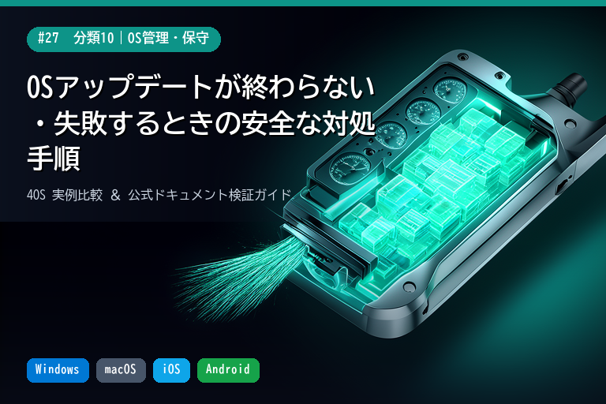

#27｜分類10: システム管理・OS設定・メンテナンス 2026-11-23

OSアップデートが終わらない・失敗するときの安全な対処手順｜Windows・macOS・iOS・Android の比較ガイド
「OSのアップデートを始めたものの、数時間経っても終わらない」「エラーが出てインストールが失敗する」といったトラブルに直面したことはありませんか？
特に重要な作業や会議を控えている時、あるいは大切なデータが入っているデバイスの挙動がおかしくなった時は非常に焦るものです。実は、OSアップデートの失敗や停滞には共通の「ボトルネック」が存在します。それはハードウェア（SSD）の状態、ストレージ容量の不足、そしてネットワーク環境の不安定さです。
この記事では、Windows、macOS、iOS、Androidの4つの主要OSにおいて、アップデートが進まない時の原因を特定し、安全に解決するための実践的な手順を徹底解説します。
4OS比較早見表
| OS | 主な更新手段 | 推奨空き容量（目安） | オフライン更新の可否 | 特徴的な注意点 |
|---|---|---|---|---|
| Windows 11 | Windows Update | 20GB以上 | 可能（カタログ利用） | サブシステム(WSL2等)の干渉に注意 |
| macOS | システム設定 | 20GB以上 | 可能（DMG/App Store） | Time Machineとの競合に注意 |
| iOS | 設定アプリ | 10GB以上 | 可能（PC接続必須） | iCloudバックアップ中のブロック |
| Android | 設定アプリ | 10GB以上 | 機種による（OTA/PC） | メーカー独自の最適化による差異あり |
1. Windows 11 での実例手順
Windows 11では、システム領域の整合性を保ちながら更新を行うことが重要です。
公式仕様に基づく実例手順
- 更新プログラムの手動チェック: 「設定」>「Windows Update」>「更新プログラムのチェック」をクリックします。
- ストレージ容量の確保（最重要）:
- 「設定」>「システム」>「ストレージ」を開きます。
- 「ドライブの空き領域を増やす」機能を使用し、不要な一時ファイルや以前の更新ファイルを自動削除してスペースを確保します。
- オフラインインストール手順（進まない場合）:
- Microsoft Update Catalogから該当バージョンの
.cabファイルをダウンロード。 - USBメモリに展開後、「設定」>「Windows Update」>「詳細オプション」等から追加ソースを指定し、USBを読み込ませて実行します。
- Microsoft Update Catalogから該当バージョンの
標準機能の制限事項・注意点
- 仮想メモリ（ページファイル）: Windows Updateはシステム領域を激しく占有するため、初期状態では不足しがちです。標準メニューでの直接調整は隠されていることが多いため、高度な調整にはレジストリ編集やサードパーティ製ツールが必要になる場合があります。
- Windows Sandbox / WSL2 影響: これらのサブシステムが稼働中、または更新プロセス中にロックされる可能性があります。これらは標準機能では強制終了できない場合があるため、事前にシャットダウンしておくことが推奨されます。
よくあるトラブルと解決法
- 「準備中」で永遠に止まる・ループする
- 原因: ネットワークの不安定さや一時ファイルの破損。
- 対策: 「設定」>「ネットワークとインターネット」からWi-Fiを切断し、有線LANまたは安定したモバイルホットスポットへ切り替えて再試行してください。
- 「インストール中にエラーが発生しました」
- 原因: 更新ファイルの整合性破損または容量不足。
- 対策: 「ドライブの空き領域を増やす」を実行し、C:ドライブに10GB以上の余裕があるか確認します。改善しない場合は、SoftwareDistributionフォルダ内のキャッシュをリセットする必要があります。
- 更新後画面が真っ白になる・起動しない
- 原因: グラフィックドライバの破損またはシステムファイルエラー。
- 対策: 安全モードから「設定」>「アプリ」で最近入れたグラフィック関連ソフトを削除するか、Windowsのリセット機能（データ保持）を使用します。※重要：作業前にSSDを外付け化し、クローン作成ソフトでバックアップを取ることを強く推奨します。
- 更新プログラムが見つからない・表示されない
- 原因: Windows Updateサービスの停止またはキャッシュ破損。
- 対策: コマンドプロンプト（管理者）で
sfc /scannowとDISM /Online /Cleanup-Image /RestoreHealthを実行し、システムファイルの修復を試みてください。
2. macOS での実例手順
macOSはセキュリティが厳格なため、ストレージ管理とバックアップの整合性が鍵となります。
公式仕様に基づく実例手順
- 更新プログラムの確認: 「Appleメニュー」>「システム設定」>「一般」>「ソフトウェアアップデート」から行います。
- ストレージ容量の確保（最重要）:
- 「システム設定」>「一般」>「ストレージ」を開きます。
- 「空き領域を増やす」ボタンを押し、不要なファイルを整理します。スムーズな更新には最低でも20GB程度の推奨スペースが必要です。
- オフラインインストール手順（進まない場合）:
- Apple公式サイトから最新のインストーラー
.dmgをダウンロード。 - ファイルをマウントし、起動ディスクにコピーした上で「ソフトウェアアップデート」から再確認します。
- Apple公式サイトから最新のインストーラー
標準機能の制限事項・注意点
- Time Machine の干渉: バックアップソフトがシステムファイルを読み書き中だと更新がブロックされることがあります。自動バックアップスケジュールを一時停止することが推奨されます。
- SIP (System Integrity Protection): システムフォルダへの手動編集や一部ツールによる強制インストールは標準機能では不可能であり、セキュリティリスクがあるため非対応です。
よくあるトラブルと解決法
- 「アップデートの準備中」でフリーズする
- 原因: メモリ不足またはバックグラウンドプロセスとの競合。
- 対策: 「アクティビティモニター」を開き、メモリ使用率の高いアプリを強制終了します。不要なキャッシュファイルを削除して再試行してください。
- 「インストール中にエラーが発生しました」（特にIntelチップ）
- 原因: 電源供給の不安定さまたはSSDの読み書きエラー。
- 対策: 必ずACアダプタを接続した状態で実施してください。SSDが故障している場合は、エアダスターで冷却しながら再起動するか、外付け化してクローンソフトでバックアップし、OSを再インストールします。
- 更新後 Apple ID でサインインできない・App Store が使えない
- 原因: システム拡張の破損またはネットワーク設定の不整合。
- 対策: 「ディスクユーティリティ」でAPFS形式の修復（データ保持オプション選択）を行い、ネットワーク設定を再確認してください。
- 「この Mac は最新のバージョンに更新できません」と表示される
- 原因: ハードウェアの互換性不足またはストレージ容量不足。
- 対策: ストレージ空き容量を確保します。それでもダメな場合は、SSD換装キットによる性能向上と合わせて、モデルが対応しているかAppleサポートページで再確認してください。
3. iOS（iPhone / iPad）での実例手順
モバイル端末では「通信環境」と「iCloudの同期状態」が大きな影響を与えます。
公式仕様に基づく実例手順
- アップデートの確認: 「設定」>「一般」>「ソフトウェアの更新」から行います。
- ストレージ容量の確保（最重要）:
- 「設定」>「一般」>「iPhone/iPadのストレージ」を開きます。
- 「ストレージを整理する」機能を使用し、不要なアプリや写真データを削除します。※更新には通常5GB〜10GBの空きが必要です。
- オフラインインストール手順（進まない場合）:
- PC/Macに接続し、iTunesまたはFinderを開き、「アップデート」ボタンから直接
.ipswファイルを適用します。
- PC/Macに接続し、iTunesまたはFinderを開き、「アップデート」ボタンから直接
標準機能の制限事項・注意点
- iTunes/Finder の依存度: 大規模な更新や修復には、Wi-Fi単独ではなくPC/Macと有線ケーブルでの接続が必要になるケースが多いです。
- iCloud バックアップとの競合: iCloudがバックアップ中だとアップデートがブロックされることがあります。「設定」>「[自分の名前]」>「iCloud」で一時停止を検討してください。
よくあるトラブルと解決法
- 「ダウンロード中」と表示されて止まる・時間がかかる
- 原因: Wi-Fiの不安定さまたは通信速度不足。
- 対策: ネットワークを切り替えるか、PC/Macと有線接続して更新します。※データ転送中はUSBケーブルを絶対に外さないでください。
- 「インストール中にエラーが発生しました」（特に10GB超の更新）
- 原因: ストレージ容量不足。iOSは表示上の数字より実際にはさらに5〜10GB必要になることがあります。
- 対策: 「ストレージを整理する」を実行し、さらに空き容量を増やします。※SSD（フラッシュメモリ）の寿命による読み書きエラーの場合は、PC接続での修復を試みてください。
- アップデート後画面が真っ白になる・起動しない
- 原因: OSファイルの破損。
- 対策: PC/Macにケーブルを繋ぎ、「更新」ではなく「復元（Restore）」を選択します。※これはデータを消去するため、事前にiCloudやPCへのバックアップがあることを確認してください。
- 更新プログラムが見つからない・表示されない
- 原因: Appleサーバーとの通信エラーまたは設定の不整合。
- 対策: 「設定」>「一般」>「情報」からデバイスを再起動します。それでもダメな場合は、PC/MacでiTunes/Finderのアップデートプログラムを再ダウンロードして適用してください。
4. Android での実例手順
Androidはメーカー（Samsung, Google, Sony等）によってUIや更新プロセスが異なるため、機種ごとの「設定」アプリを確認することが基本です。
公式仕様に基づく実例手順
- 更新プログラムの確認: 「設定」>「システム」>「システムアップデート」（または「ソフトウェア更新」）から行います。
- ストレージ容量の確保（最重要）:
- 「設定」>「ストレージ」を開きます。
- 不要なアプリやキャッシュを削除します。※AndroidはOSの挙動に余裕を持たせるため、10GB以上の空きを推奨します。
- オフラインインストール手順（進まない場合）:
- 標準機能のみでは制限あり。メーカー提供の専用ツール（例：Samsung Smart Switch等）や、開発者向けオプションを利用したADBコマンドによるサイドロードが必要になる場合があります。
標準機能の制限事項・注意点
- メーカー独自の最適化: Google純正のPixelシリーズと他社製モデルでは、更新ファイルの配信スケジュールや「自動更新」の挙動が異なるため、手動でのチェックを推奨します。
- アプリの互換性: OSアップデート後に特定のアプリがクラッシュする場合、OS側の問題ではなくアプリ側の未対応である可能性が高いため、Google Playストアでの更新を確認してください。
よくあるトラブルと解決法
- 「ダウンロード中」から進まない
- 原因: 通信環境の不安定さまたはシステムキャッシュの蓄積。
- 対策: Wi-Fiをオフにして再度オンにするか、機内モードのオン/オフを試します。改善しない場合は再起動を行ってください。
- 「インストール中にエラーが発生しました」
- 原因: ストレージ不足またはファイル破損。
- 対策: キャッシュをクリアし、「ストレージを整理する」を実行して十分な空き（15%以上）を確保します。
- アップデート後に動作が極端に重い・発熱する
- 原因: アップデート後のインデックス作成処理や、古いアプリとの競合。
- 対策: 最初の数時間は放置し、バックグラウンド処理が終わるのを待ちます。改善しない場合は「設定」から最近インストールしたアプリを一つずつ無効化して確認します。
よくあるトラブルと解決法（共通チェックリスト）
OSを問わず、以下の項目を確認することで多くのエラーは回避できます。
- [ ] 空き容量の再確認: OSが展開する際に「現在の空き容量の2倍」程度のスペースが必要になることがあります。
- [ ] ネットワークの安定性: Wi-Fiではなく有線LAN、または通信制限のない安定した回線を使用していますか？
- [ ] 電源の確保: ノートPCやスマートフォンは必ずACアダプタを接続した状態で行ってください。
- [ ] 周辺機器の取り外し: USBハブや外付けHDDなど、不要な周辺機器を取り外してから実行してください（特にWindows/macOS）。
まとめ：快適なマルチOS環境を作るポイント
OSのアップデートはシステムの健全性を保つために不可欠ですが、失敗した際のダメージを最小限にするためには「事前の備え」が最も重要です。
スムーズなメンテナンス環境を構築するために、以下のアイテムを揃えておくことをおすすめします。
- SSD換装キットとクローン作成ソフト: ストレージ容量不足や劣化によるエラーを防ぐため、高速なSSDへの換装は有効です。また、作業前に「クローン作成ソフト」で現在のシステムを丸ごとバックアップしておけば、万が一の失敗時も迅速に復元できます。
- エアダスターとクリーニング用品: 内部の埃は熱暴走の原因となり、アップデート中の高負荷環境では致命的なエラーを引き起こすことがあります。定期的な清掃でハードウェアの寿命を延ばしましょう。
適切な準備と正しい手順を知ることで、OSアップデートのストレスから解放され、より快適なデジタルライフを送ることができます。
参考文献・公式ドキュメント（一次情報ソース）
本記事の手順・仕様は以下の各OSおよびツールの公式ドキュメントに基づいています。OSアップデートによりメニュー名称や挙動が変わる場合があるため、最新仕様の確認にもご活用ください。